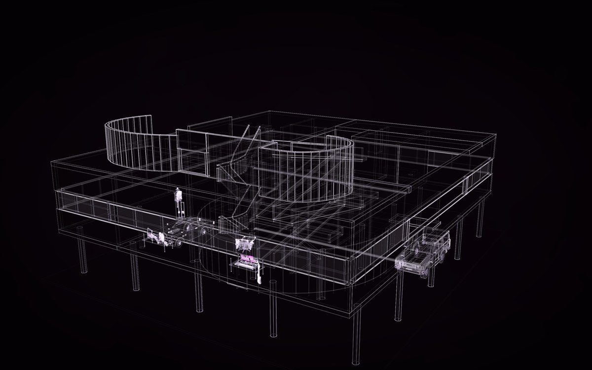

12 constructs, placed 13 times. Drag to turn it; the buttons are its views; P shows how each part is known, S shows it as a solid in its own colours.
Made for this world
1 construct made for The Villa Savoye, lived in, each its own construct: open one to see it alone, with its parts and its record.
Also placed from the gallery: Villa Savoye, made in Hermes, Jackson Juggernaut ET7, Eames Lounge Chair and Ottoman, Tompion year-going longcase clock, Braun SK 4, Revox A77, Leica M3, SERUM 2 / 61, an unaffiliated concept from a manual, Toyota Land Cruiser FJ62, Aston Martin DB5, KESTREL, more detailed.